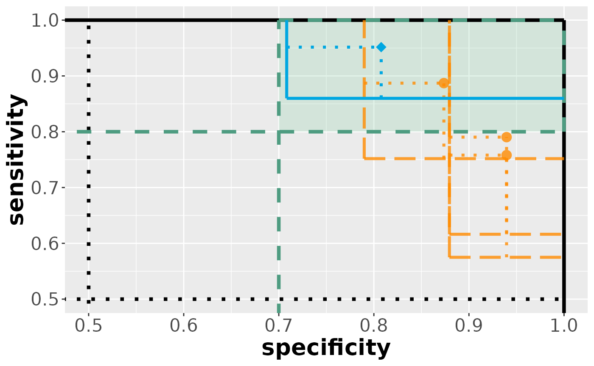
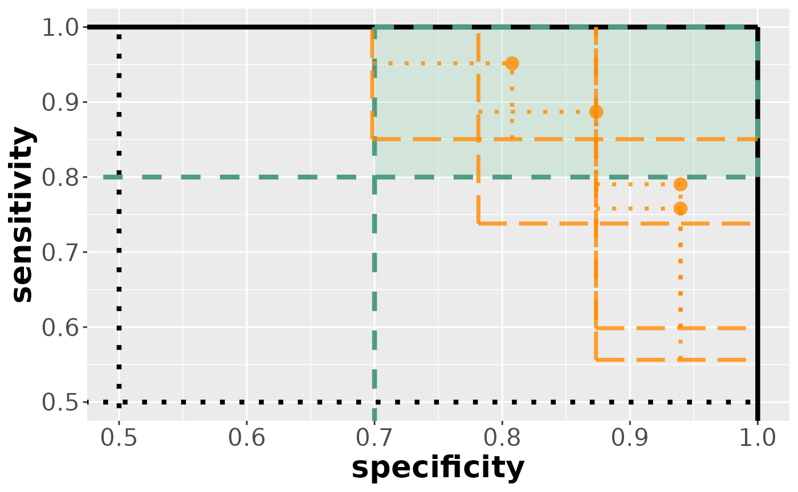

The goal of is this vignette is to illustrate the R package cases by some elementary code examples.
Important functions
categorize()
Often, binary predictions are not readily available but rather need to be derived from continuous (risk) scores. This can be done via the categorize function.
# real data example from publication here
set.seed(123)
M <- as.data.frame(mvtnorm::rmvnorm(10, mean = rep(0, 3), sigma = 2 * diag(3)))
M
#> V1 V2 V3
#> 1 -0.79263226 -0.3255201 2.2043464
#> 2 0.09971392 0.1828405 2.4254682
#> 3 0.65183395 -1.7890668 -0.9713566
#> 4 -0.63026120 1.7311131 0.5088536
#> 5 0.56677642 0.1565290 -0.7860781
#> 6 2.52707679 0.7040669 -2.7812167
#> 7 0.99186703 -0.6686280 -1.5101308
#> 8 -0.30826308 -1.4509894 -1.0308079
#> 9 -0.88393901 -2.3853446 1.1848098
#> 10 0.21690234 -1.6095687 1.7731621
## categorize at 0 by default
yhat <- categorize(M)
yhat
#> V1_0 V2_0 V3_0
#> 1 0 0 1
#> 2 1 1 1
#> 3 1 0 0
#> 4 0 1 1
#> 5 1 1 0
#> 6 1 1 0
#> 7 1 0 0
#> 8 0 0 0
#> 9 0 0 1
#> 10 1 0 1
## define multiple cutpoints to define multiple decision rules per marker
C <- c(0, 1, 0, 1, 0, 1)
a <- c(1, 1, 2, 2, 3, 3)
categorize(M, C, a)
#> V1_0 V1_1 V2_0 V2_1 V3_0 V3_1
#> 1 0 0 0 0 1 1
#> 2 1 0 1 0 1 1
#> 3 1 0 0 0 0 0
#> 4 0 0 1 1 1 0
#> 5 1 0 1 0 0 0
#> 6 1 1 1 0 0 0
#> 7 1 0 0 0 0 0
#> 8 0 0 0 0 0 0
#> 9 0 0 0 0 1 1
#> 10 1 0 0 0 1 1
## this can even be used to do multi-class classification, like this:
C <- matrix(rep(c(-1, 0, 1, -2, 0, 2), 3), ncol = 3, byrow = TRUE)
C
#> [,1] [,2] [,3]
#> [1,] -1 0 1
#> [2,] -2 0 2
#> [3,] -1 0 1
#> [4,] -2 0 2
#> [5,] -1 0 1
#> [6,] -2 0 2
categorize(M, C, a)
#> V1_a V1_b V2_a V2_b V3_a V3_b
#> 1 1 1 1 1 3 3
#> 2 2 2 2 2 3 3
#> 3 2 2 0 1 1 1
#> 4 1 1 3 2 2 2
#> 5 2 2 2 2 1 1
#> 6 3 3 2 2 0 0
#> 7 2 2 1 1 0 1
#> 8 1 1 0 1 0 1
#> 9 1 1 0 0 3 2
#> 10 2 2 0 1 3 2compare()
In supervised classification, it is assumed that we have a true set of labels. In medical testing, this is usually called the reference standard provided by an established diagnostic/prognostic tool. We need to compare model predictions against these labels in order to compute model accuracy.
## consider binary prediction from 3 models from previous r chunk
names(yhat) <- paste0("rule", 1:ncol(yhat))
yhat
#> rule1 rule2 rule3
#> 1 0 0 1
#> 2 1 1 1
#> 3 1 0 0
#> 4 0 1 1
#> 5 1 1 0
#> 6 1 1 0
#> 7 1 0 0
#> 8 0 0 0
#> 9 0 0 1
#> 10 1 0 1
## assume true labels
y <- c(rep(1, 5), rep(0, 5))
## compare then results in
compare(yhat, y)
#> $specificity
#> rule1 rule2 rule3
#> 6 0 0 1
#> 7 0 1 1
#> 8 1 1 1
#> 9 1 1 0
#> 10 0 1 0
#>
#> $sensitivity
#> rule1 rule2 rule3
#> 1 0 0 1
#> 2 1 1 1
#> 3 1 0 0
#> 4 0 1 1
#> 5 1 1 0evaluate()
Main function of the package
evaluate(compare(yhat, y))
#> [cases] evaluation results:
#> $specificity
#> parameter hypothesis estimate lower upper tstat pval reject pval_all
#> 1 rule1 == 0.5 0.4 0.0080 0.7920 0.5000 0.6171 FALSE 0.6171
#> 2 rule2 == 0.5 0.8 0.4799 1.1201 1.8371 0.0662 FALSE 0.6171
#> 3 rule3 == 0.5 0.6 0.2080 0.9920 0.5000 0.6171 FALSE 0.6171
#> reject_all
#> 1 FALSE
#> 2 FALSE
#> 3 FALSE
#>
#> $sensitivity
#> parameter hypothesis estimate lower upper tstat pval reject pval_all
#> 1 rule1 == 0.5 0.6 0.208 0.992 0.5 0.6171 FALSE 0.6171
#> 2 rule2 == 0.5 0.6 0.208 0.992 0.5 0.6171 FALSE 0.6171
#> 3 rule3 == 0.5 0.6 0.208 0.992 0.5 0.6171 FALSE 0.6171
#> reject_all
#> 1 FALSE
#> 2 FALSE
#> 3 FALSEMore details on the dta function are provided in the last section
draw_data()
cases includes a few functions for synthetic data generation
draw_data_lfc(n = 20)
#> $specificity
#> model1 model2 model3 model4 model5 model6 model7 model8 model9 model10
#> [1,] 1 1 1 1 1 1 1 1 1 1
#> [2,] 1 1 1 1 1 0 1 1 1 1
#> [3,] 0 1 1 1 1 1 1 1 1 1
#> [4,] 1 1 1 1 1 1 1 1 1 1
#> [5,] 1 1 0 1 1 1 1 1 1 1
#> [6,] 1 1 1 1 1 1 0 1 0 1
#> [7,] 1 1 1 1 1 1 1 1 1 1
#> [8,] 1 1 0 1 1 1 1 1 1 1
#> [9,] 1 1 1 1 1 0 1 1 1 1
#> [10,] 1 1 1 1 1 1 1 1 1 1
#>
#> $sensitivity
#> model1 model2 model3 model4 model5 model6 model7 model8 model9 model10
#> [1,] 1 1 1 1 1 1 1 1 1 1
#> [2,] 1 1 1 1 1 1 1 1 1 1
#> [3,] 1 1 1 1 1 1 1 1 1 0
#> [4,] 1 1 1 1 1 1 1 1 1 0
#> [5,] 1 1 1 1 0 1 1 1 1 1
#> [6,] 1 1 1 1 0 1 1 1 1 1
#> [7,] 1 1 1 1 1 1 1 0 1 0
#> [8,] 1 1 1 0 1 1 1 1 1 1
#> [9,] 1 1 1 1 1 1 1 0 1 1
#> [10,] 1 1 1 1 1 1 1 1 1 0
#>
#> attr(,"info")
#> model b se sp
#> 1 model1 TRUE 1.0 0.8
#> 2 model2 FALSE 0.8 1.0
#> 3 model3 TRUE 1.0 0.8
#> 4 model4 FALSE 0.8 1.0
#> 5 model5 FALSE 0.8 1.0
#> 6 model6 TRUE 1.0 0.8
#> 7 model7 TRUE 1.0 0.8
#> 8 model8 FALSE 0.8 1.0
#> 9 model9 TRUE 1.0 0.8
#> 10 model10 FALSE 0.8 1.0
draw_data_roc(n = 20)
#> $specificity
#> model1 model2 model3 model4 model5 model6 model7 model8 model9 model10
#> [1,] 1 0 1 0 1 1 1 1 1 1
#> [2,] 1 1 1 1 1 1 1 1 1 1
#> [3,] 0 1 1 1 1 1 1 1 1 1
#> [4,] 0 0 1 0 1 1 1 1 1 1
#> [5,] 1 1 1 0 0 1 1 1 1 1
#> [6,] 1 1 0 1 1 1 1 1 1 1
#> [7,] 0 1 1 1 1 1 1 1 1 1
#> [8,] 1 1 0 0 1 1 1 1 1 1
#> [9,] 1 1 1 1 1 1 1 1 1 1
#> [10,] 0 1 1 1 1 1 1 1 1 1
#>
#> $sensitivity
#> model1 model2 model3 model4 model5 model6 model7 model8 model9 model10
#> [1,] 1 0 1 1 1 1 1 1 1 0
#> [2,] 1 0 0 0 0 0 0 0 0 0
#> [3,] 1 0 1 1 1 1 1 1 0 0
#> [4,] 1 1 1 1 1 1 1 1 1 1
#> [5,] 1 1 1 1 1 1 1 1 1 1
#> [6,] 1 0 1 1 1 1 1 1 1 1
#> [7,] 1 1 1 1 1 1 1 1 1 1
#> [8,] 1 1 1 1 1 1 1 1 1 1
#> [9,] 0 1 1 1 1 1 1 1 1 1
#> [10,] 0 1 1 1 1 1 1 1 1 1
#>
#> attr(,"info")
#> model auc cutoff se sp
#> 1 model1 0.850 0.7026076 0.7773072 0.7588499
#> 2 model2 0.875 0.9744355 0.7429298 0.8350798
#> 3 model3 0.900 0.7414402 0.8579035 0.7707867
#> 4 model4 0.925 0.6637751 0.9149729 0.7465829
#> 5 model5 0.925 0.8579379 0.8805752 0.8045366
#> 6 model6 0.950 0.5861100 0.9590761 0.7210992
#> 7 model7 0.950 0.9744355 0.9117706 0.8350798
#> 8 model8 0.950 1.0909332 0.8916296 0.8623489
#> 9 model9 0.950 1.1685983 0.8764814 0.8787172
#> 10 model10 0.950 1.4792588 0.8014789 0.9304644Remark: Synthetic data comes at the ‘compared’ level meaning the labels 1 and 0 indicate correct and false predictions, respectively. No need to compare() in addition.
Common workflows
The pipe operator ‘%>%’ allows us to chain together subsequent operations in R. This is useful, as the dta function expects preprocessed data indicating correct (1) and false (0) predictions.
M %>%
categorize() %>%
compare(y) %>%
evaluate()
#> [cases] evaluation results:
#> $specificity
#> parameter hypothesis estimate lower upper tstat pval reject pval_all
#> 1 V1_0 == 0.5 0.4 0.0080 0.7920 0.5000 0.6171 FALSE 0.6171
#> 2 V2_0 == 0.5 0.8 0.4799 1.1201 1.8371 0.0662 FALSE 0.6171
#> 3 V3_0 == 0.5 0.6 0.2080 0.9920 0.5000 0.6171 FALSE 0.6171
#> reject_all
#> 1 FALSE
#> 2 FALSE
#> 3 FALSE
#>
#> $sensitivity
#> parameter hypothesis estimate lower upper tstat pval reject pval_all
#> 1 V1_0 == 0.5 0.6 0.208 0.992 0.5 0.6171 FALSE 0.6171
#> 2 V2_0 == 0.5 0.6 0.208 0.992 0.5 0.6171 FALSE 0.6171
#> 3 V3_0 == 0.5 0.6 0.208 0.992 0.5 0.6171 FALSE 0.6171
#> reject_all
#> 1 FALSE
#> 2 FALSE
#> 3 FALSEMultiple testing for co-primary endpoints
Specification of hypotheses
The R command
?evaluategives an overview over the function arguments of the evaluate function.
- comparator defines one of the classification rules under consideration to be the primary comparator
- benchmark is a pre-defined accuracy categorize for each subgroup
Together this implies the hypotheses system that is considered, namely
In the application of primary interest, diagnostic accuracy studies, this simplifies to with and indicating sensitivity and specificity of a medical test or classication rule. In this case we aim to reject the global null hypothesis
Comparison vs. confidence regions
In the following, we highlight the difference between the “co-primary” analysis (comparison regions) and a “full” analysis (confidence regions).
set.seed(1337)
data <- draw_data_roc(
n = 120, prev = c(0.25, 0.75), m = 4,
delta = 0.05, e = 10, auc = seq(0.90, 0.95, 0.025), rho = c(0.25, 0.25)
)
lapply(data, head)
#> $specificity
#> model1 model2 model3 model4
#> [1,] 1 1 1 1
#> [2,] 0 0 1 1
#> [3,] 1 1 1 1
#> [4,] 1 1 1 1
#> [5,] 1 1 1 1
#> [6,] 1 1 1 1
#>
#> $sensitivity
#> model1 model2 model3 model4
#> [1,] 0 0 1 1
#> [2,] 1 1 1 1
#> [3,] 1 1 1 1
#> [4,] 1 1 0 0
#> [5,] 1 1 1 1
#> [6,] 1 1 1 1
## comparison regions
results_comp <- data %>% evaluate(
alternative = "greater",
alpha = 0.025,
benchmark = c(0.7, 0.8),
analysis = "co-primary",
regu = TRUE,
adj = "maxt"
)
visualize(results_comp)
## confidence regions
results_conf <- data %>% evaluate(
alternative = "greater",
alpha = 0.025,
benchmark = c(0.7, 0.8),
analysis = "full",
regu = TRUE,
adj = "maxt"
)
visualize(results_conf)
As we can see, the comparison regions are more liberal compared to the confidence regions.
Real data example
A second vignette shows an application of the cases package to the Breast Cancer Wisconsin Diagnostic (wdbc) data set.
vignette("example_wdbc", "cases")References
- Westphal M, Zapf A. Statistical inference for diagnostic test accuracy studies with multiple comparisons. Statistical Methods in Medical Research. 2024;0(0). doi:10.1177/09622802241236933